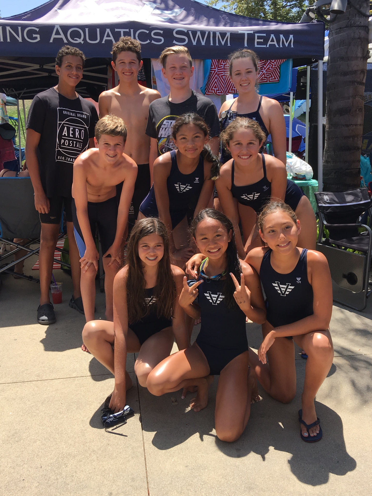
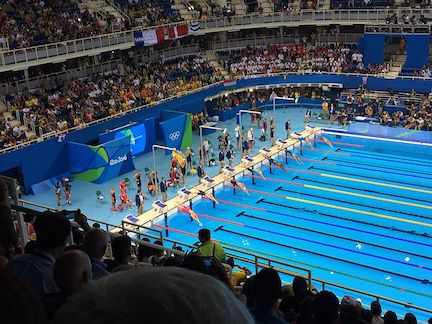

Swimming
My Swim Life
I have been on the same swim team since first grade. I started competitvely swimming in second grade and have been since. Swimming is a big part of my life for I have created a family on my team and have developed many physical and mental skills from it.Video of me swimming in a Relay Race

Skills
During my time of swimming, I've learned many skills that help contribute to sports but also everyday life. Here are a few:Physical Skills
- Coordination
- Different breathing patterns
- Diving
- Physical Edurance
Mental Skills
- Stamina
- Realistic Goal-Setting
- Detailed Imagery (ex. able to picture most details in a race)
- Better Focus
- Greater Motivation

Swimming Goals
My goals for swimming range in many different ways. Everyday I go to swim, I set small goals to not stop in a set, or to breathe only a few times during a 50 free. One of my main goals is to get to Winter Age Group Invitationals for the 50 yard free, this year or next year. Another goal of mine is to make it to the junior olympics. In highschool, I would like to be apart of the JV or Varsity swim in freshman year and throughout highschool(my sister got into Varsity in her freshman year). A long term goal of mine is to work hard in swim so I can get into a college with a swimming scholarship. It is very hard so I am also using swimming skills in other water sports to try to get scholarships.
